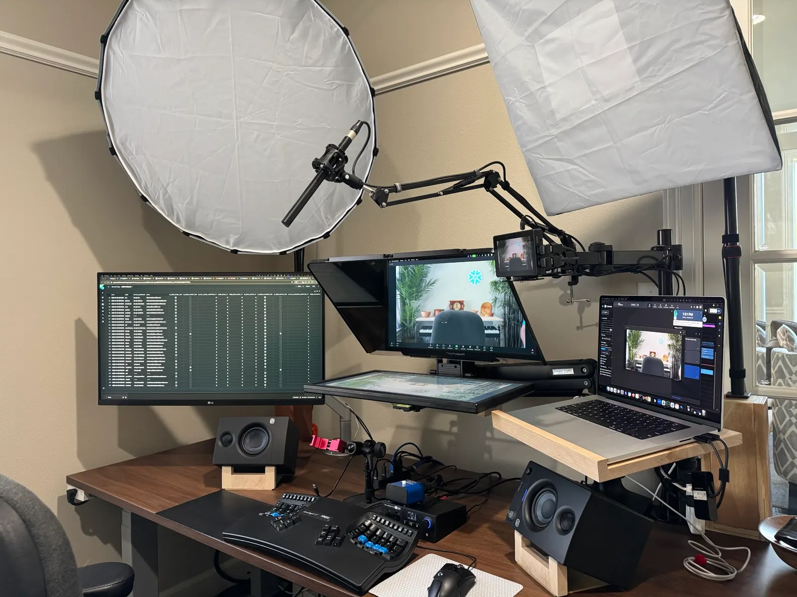
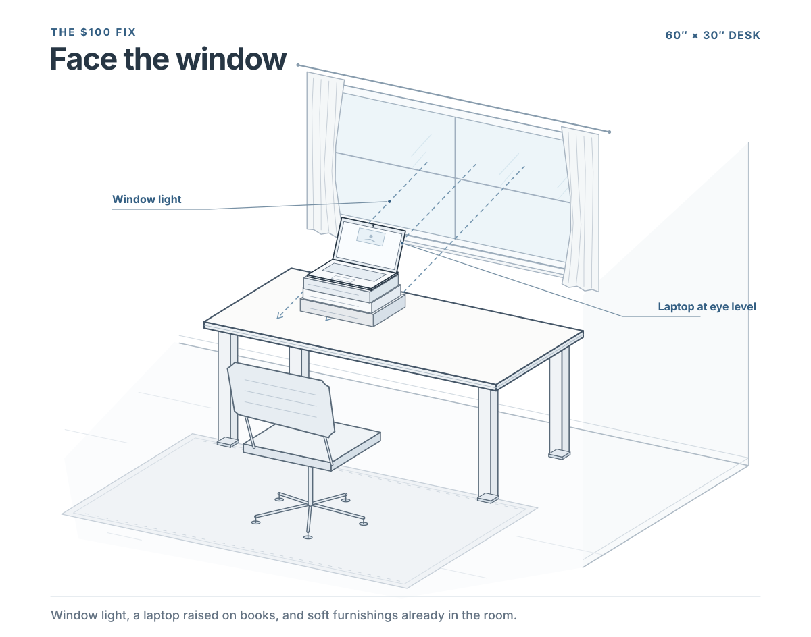
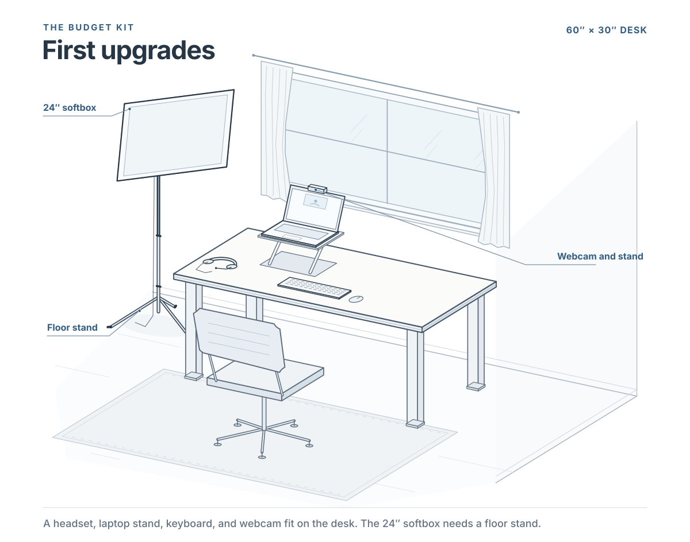
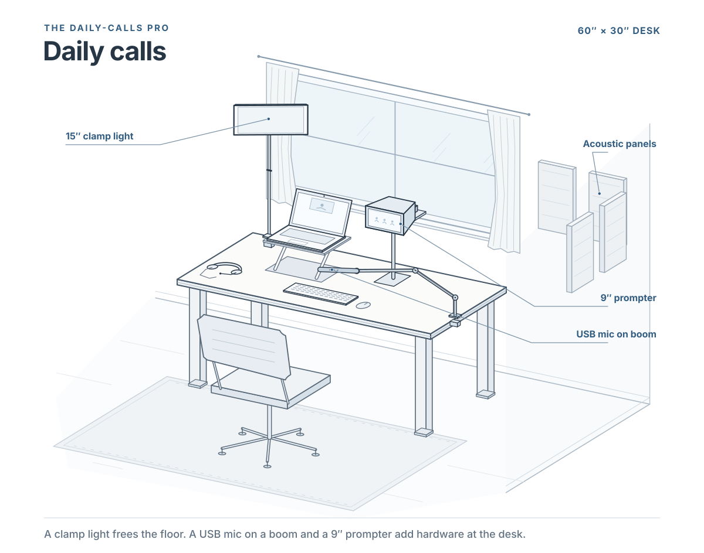
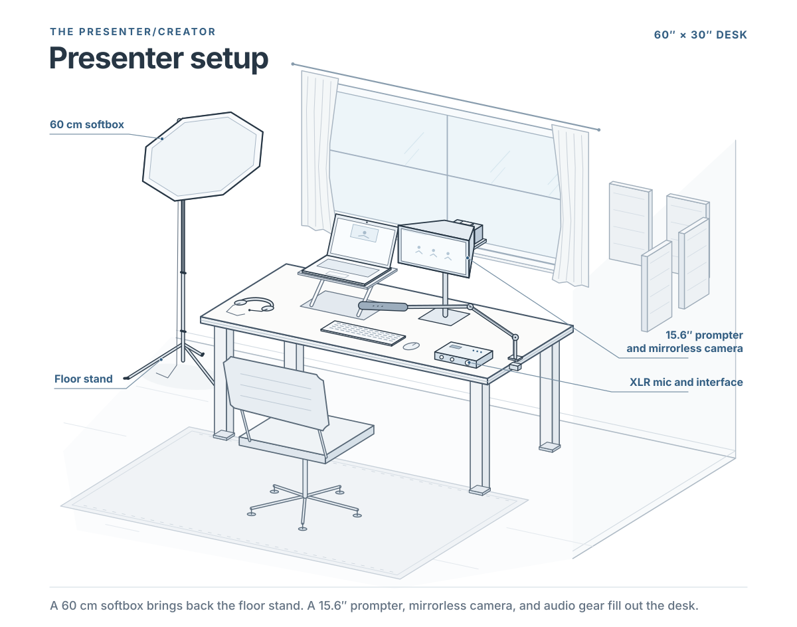
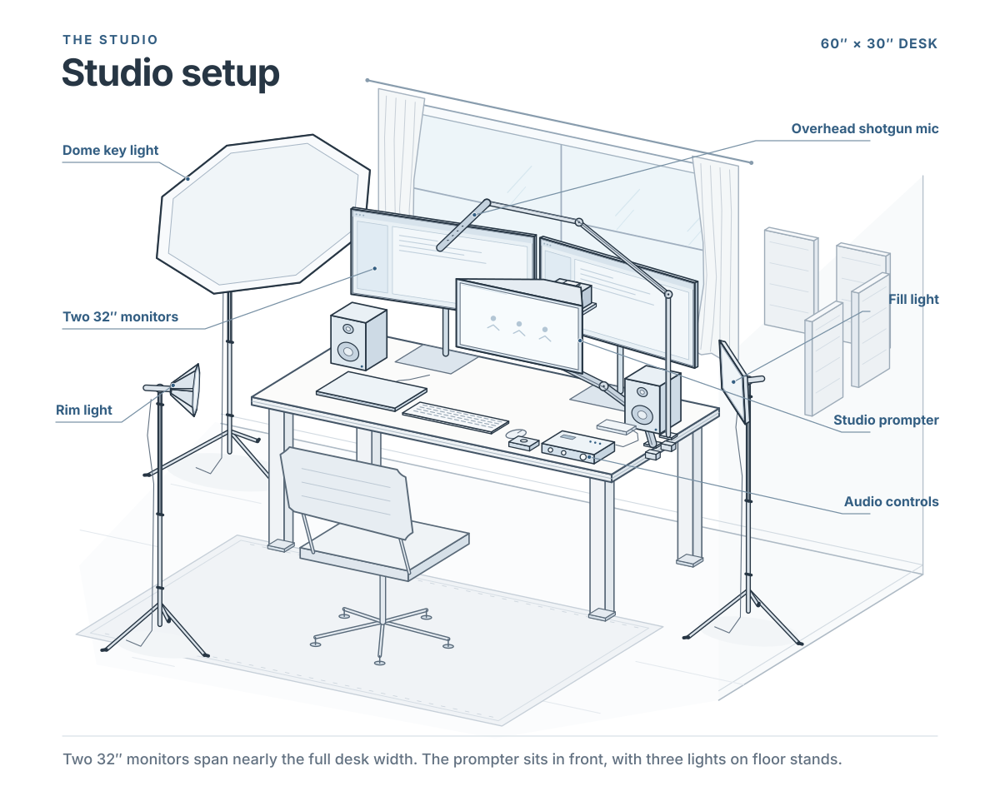
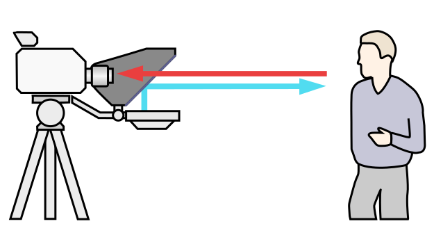
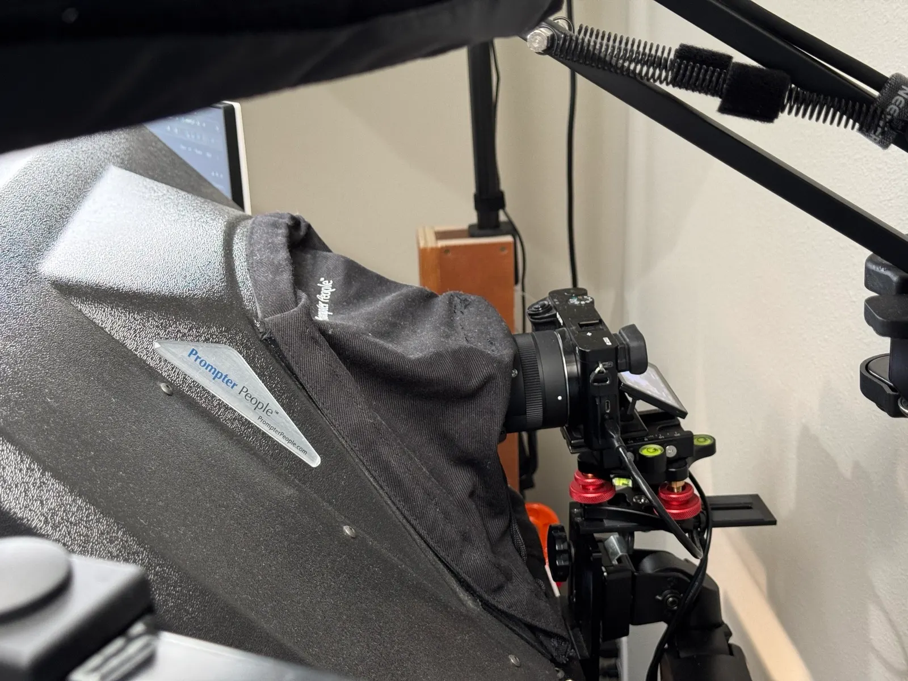

Toward Better Video Calls
Over the years, a lot of people have commented on how I look and sound on video calls from my home office. Sometimes they are just curious, but often they're considering upgrading their own setup. It's surprisingly hard to give a good answer quickly, and it really depends on the problems you're having. The right solution will depend on your needs, how much gear you want on your desk and how much you want to spend. So I've tried to write the whole answer down here, as completely as I can.

The good news is that the least expensive upgrades make the biggest difference. Earbuds, a decent light, and a mic close to your mouth will do more for your calls than any camera. Beyond that, each upgrade costs more and does less. I'll admit I had a lot of fun going well past that point: my own setup has a studio teleprompter, a mirrorless camera, three lights, an off-camera shotgun mic, and acoustic panels on the walls. You don't need any of that to look and sound great.
Quick picks
If you only read one part of this page, read this.
How to read this
Each area below is upgraded on its own track. Tiers run from T0 (free) to T4 (studio). You don't need to keep every area at the same tier. The common mistake is spending on cameras before fixing audio or light.
Each table marks a My pick for most people (also highlighted), plus Free fix, Budget pick and Upgrade pick where they apply. The tier codes (T0 free to T4 studio) are there if you want the detail.
Prices are rough US street prices, last checked November 2026.
Common upgrade paths
The same desk, five ways. Pick a path to see how much gear and floor space it takes.


- What you add
- Earbuds → face a window → laptop stand → Room T0
- ~Total
- ~$80
- Space
- Desk only (60 × 30 in)


- What you add
- Earbuds (Listening T1) + bulb softbox (Lighting T1) + USB mic on a boom arm (Mic T2a)
- ~Total
- ~$200
- Space
- Desk + ~2 ft of floor beside it for the softbox stand


- What you add
- The $100 fix + Key Light Air MK.2 + USB mic + Elgato Prompter + Link 2C Pro
- ~Total
- ~$900
- Space
- Desk only. Light, mic and prompter clamp to the desk


- What you add
- The daily-calls pro + Amaran 60x S and softbox + used ZV-E10 + Room T2
- ~Total
- ~$2,000
- Space
- Desk + ~1.5 ft of floor beside it for the softbox stand


- What you add
- Prompter People prompter on a heavy arm, Sony a6000 + Sigma zoom, 2× Amaran 100x (Light Dome key, rim light) + fill, Revelator io24, Synco Mic-02 shotgun, Rolls MS111 mute switch, PreSonus monitors, room treatment
- ~Total
- $3,000+ · My setup
- Space
- ~7.5 × 7.5 ft corner: key light stand beside the desk, rim light behind your chair
Decision tree: what to upgrade next
Start at the top and do the first upgrade whose answer is "yes". Then start over.
-
Do people hear echo, or ask you to repeat yourself?
Audio problems are the ones other people notice first. Echo means your speakers are leaking back into your mic. Being asked to repeat yourself means the mic is too far from your mouth or the room is too loud.
How to check: Ask a colleague, or record a short Zoom meeting with yourself and play it back on headphones.
NoEchoListening T1Wired earbudsRepeatMic T2aBudget USB mic on a boom arm -
Is your face dark, uneven, or backlit?
Cameras need light far more than they need resolution. A dark or backlit face looks bad on any camera, and fixing it costs little.
How to check: Look at your Zoom preview. You should see both eyes clearly, with no bright window or lamp behind you.
NoYesCan you face a window for most calls?
YesLighting T0Move the deskNoLighting T2Key Light Air MK.2 -
Is the camera below eye level?
A low camera looks up at your chin and makes you seem to look down at people. It is the cheapest fix on this page.
How to check: The lens should be level with your eyes, or slightly above them.
NoYesComputer T1Laptop stand -
Does eye contact matter?Presenting, selling, leading, reading notes
When you look at people's faces on screen, you look away from the lens, so they see you looking down. A prompter puts their faces over the lens.
How to check: It matters most if you present, sell, lead meetings, or read notes on calls.
NoYesEye contact T2 + Camera T2Elgato Prompter + Link 2C Pro -
Does the clap test ring?
Hard walls and floors make every mic sound distant and hollow. Fixing the room improves every mic you will ever own.
How to check: Clap once. If you hear a ring or flutter afterward, the room is adding echo.
NoYesRoom T0, then T2Soft furnishings first, then panels -
Is the image still noisy or flat with good light?
Once the light is fixed, remaining grain or a flat look comes from a small camera sensor. This is where a camera upgrade finally pays off.
How to check: Check your preview with your lighting on. Grainy shadows or a muddy background point to the camera.
NoYesDo you also record video?
YesCamera T3Used mirrorless with USB webcam modeNoCamera T2Large-sensor webcam -
Do you hate a mic in the shot, or headphones on your head?
This is about comfort and looks, not sound quality. Getting gear out of the picture costs more, because it has to work from farther away.
How to check: If neither bothers you, skip it.
NeitherMic in shotMic T3b + Interface T2–T3Off-camera shotgunHeadphonesListening T4Speakers + shotgun + mute switch, after Room T2 -
Do you also record a podcast or voiceover?
Broadcast mics matter more for recordings than for Zoom, where compression hides most of the difference.
How to check: Only worth it if you also record.
NoYesMic T3a + Interface T2SM7B/SM7dB or RE20 -
You're done.Go to Lighting T4 and a bigger prompter for polish.
Everything that makes a real difference on calls is handled. What's left is polish.
1. Listening (headphones and speakers)
| Tier | What you buy | ~Cost | What you get |
|---|---|---|---|
| T0 | Laptop speakers | $0 | Echo and feedback for everyone else. This is the #1 problem people notice on calls. |
| T1 | My pick Wired earbuds or a headset | $20–60 | No echo, ever. The best $20 you'll spend on calls. |
| T2 | Upgrade pick Comfortable in-ear monitors or open-back headphones | $80–200 | All-day comfort. You hear yourself accurately. |
| T4 | Small active monitor speakers + an off-camera shotgun mic + a mute switch | $250–600 | Nothing in your ears or on your head. Only works after the mic and room tiers below, because otherwise the speakers leak into the mic. |
2. Microphone
Room noise depends on how close the mic is to your mouth and how narrow its pickup pattern is. Whether a mic is dynamic or condenser doesn't matter much. Pick based on whether you mind the mic being in the shot.
There are two paths: on-camera (an end-address mic close to your mouth, visible in the shot) and off-camera (a shotgun mic just outside the frame). Prices here are for the mic only. What you plug it into is covered in the next section.
| Tier | What you buy | ~Cost | What you get |
|---|---|---|---|
| T0 | Laptop mic, with noise suppression turned on | $0 | Usable for short calls. Sounds distant and roomy. |
| T1 | Headset mic (comes with T1 listening) | — | Close to your mouth, so it's clear. It looks like a call center. |
| T2a | My pick Budget USB mic on a boom arm, 4–8" from your mouth: Samson Q2U (~$70, USB + XLR), alternatives Audio-Technica ATR2100x-USB (USB + XLR) or RØDE PodMic USB (~$99) | $70–100 | Sounds like a podcast and plugs straight into USB. The Q2U is podcast experts' most-recommended starter mic. |
| T2b | Upgrade pick Premium USB/XLR mic: Shure MV7+ (~$279), or the Elgato Wave:3 (~$150, a condenser that suits a quieter room) | $150–280 | Built-in processing (auto-level, noise reduction) and a tap-to-mute panel. The "one mic for everything" pick. |
| T3a | Broadcast mic, XLR, on camera: Shure SM7B (~$399–439), its built-in-preamp twin the SM7dB (~$499), the talk-radio classic Electro-Voice RE20, or its cheaper sibling the EV RE320 (~$299). Also the RØDE Procaster. Requires Interface T2 (a high-gain interface). | $150–550 + interface | The classic radio and podcast sound and look. Very forgiving of untreated rooms when you're close. These are big mics, and they are the shot. |
| T3b | Shotgun, off camera: e.g. Synco Mic-02 on a boom just outside the frame | $50–300 | Nothing in the shot. The narrow pattern rejects the room. Needs a decent room (Room T2) to sound its best. |
3. Audio interface and controls
Skip this whole section if you use a USB mic (Mic T2a or T2b).
| Tier | What you buy | ~Cost | What you get |
|---|---|---|---|
| T0 | None (USB mic) | $0 | Simplest. The mic's own preamp and DSP do the work. |
| T1 | XLR-to-USB adapter, e.g. Shure MVX2U | ~$100 | The cheapest way to run an XLR mic. |
| T2 | Budget pick 2-channel USB interface with 60 dB+ of clean gain (Focusrite Scarlett 2i2 class). The gain is what matters: it drives an SM7B, RE20 or Procaster without an inline booster. | $150–350 | Proper preamps, a headphone output, and room for a second mic or a guest. |
| T3 | My pick Interface with built-in processing and loopback (PreSonus Revelator io24 class) + a hardware mute switch (Rolls MS111) | $250–400 | Compression, EQ and noise gate in hardware, so you sound the same in every app. Loopback lets you play audio into the call. A physical mute you can trust. |
| T4 | Podcast/broadcast mixer (RØDECaster or GoXLR class) | $500+ | Faders, pads for sound effects, multiple mics. Overkill for calls, but great if you also produce a show. |
Pairing guide
| Mic | Minimum interface |
|---|---|
| USB mics (Q2U, ATR2100x-USB, PodMic USB, MV7+, Wave:3) | None (USB) |
| Shotgun (Synco Mic-02 etc.) | Any interface with phantom power (T1 adapter or T2) |
| SM7dB | T2 interface |
| SM7B, RE20, RE320, Procaster | T2 interface (60 dB+ clean gain) |
4. Lighting
Soft light comes from a large source relative to its distance from your face. It should also be dimmable, with adjustable color temperature and a CRI of 95 or higher.
| Tier | What you buy | ~Cost | What you get |
|---|---|---|---|
| T0 | Free fix Face a window. Turn off the overhead light. Never sit with a window behind you. | $0 | Often beautiful light, but only during the day and it changes with the weather. |
| T1 | Budget pick One bulb softbox (24", E26 LED bulb) | $60 | A big, soft key light. Not dimmable, fixed daylight color, needs a floor stand. |
| T2 | My pick Elgato Key Light Air MK.2 (desk clamp, 15" panel) | $140 | Dimmable, adjustable color, no floor stand. The default pick for most desks. |
| T3 | Upgrade pick COB light + softbox (Amaran 60x S + 60cm softbox or lantern) | $210–260 | The best quality per dollar. Soft, accurate skin tones. Uses Bowens-mount accessories you can keep. |
| T4 | Three-point lighting: key in a large dome, a rim light behind you, plus a fill light (e.g. 2× Amaran 100x + Light Dome) | $500+ | Separation from the background. The "studio" look. |
5. Eye contact (teleprompter)
A prompter puts the call window directly over the lens, so looking at people means looking at the camera.
| Tier | What you buy | ~Cost | What you get |
|---|---|---|---|
| T0 | Free fix Shrink the Zoom window and drag it right under the camera | $0 | Gets you about 70% of the way. |
| T1 | Phone in a prompter's universal bracket, or a phone/tablet prompter for scripts only | $0–100 | Eye contact while reading a script. Too small to show a call. |
| T2 | My pick Elgato Prompter (9") + a matched webcam (see Camera T2) | $300 + cam | Real eye contact on every call. The prompter doubles as a monitor. |
| T3 | Upgrade pick Elgato Prompter XL (15.6") | $600 | A larger gallery view and more readable notes. Fits mirrorless cameras. |
| T4 | Studio prompter (19–24", e.g. Prompter People) on a heavy-duty monitor arm | $1,000+ | A full-size meeting window at eye level. You can also present from it. |


6. Camera
| Tier | What you buy | ~Cost | What you get |
|---|---|---|---|
| T0 | Laptop camera raised to eye level, or a phone as webcam (Continuity Camera on Mac, Phone Link on Windows) | $0 | Phones are surprisingly good. Laptop cameras range from fine (M4/M5 MacBook Air 12MP) to poor. |
| T1 | Basic 1080p webcam | $50–100 | A modest step up from a weak laptop camera. Fixes the angle. |
| T2 | My pick Large-sensor webcam without a gimbal: Insta360 Link 2C Pro (1/1.3"), or Elgato Facecam MK.2 for the simplest prompter setup | $150–200 | Clean image in normal room light. Fits behind the Elgato Prompter. |
| T3 | Upgrade pick Used mirrorless camera with USB webcam mode (Sony ZV-E10 / ZV-E10 II, Canon R50) + a fast lens | $500–900 | Background blur, low-light performance, rich color. No capture card needed. |
| T4 | Mirrorless with HDMI → capture card, a dummy battery, and a zoom lens such as the Sigma 18-50mm f/2.8 | $800–1,500 | Full control and reliable all-day operation. Mostly matters if you also record video. |
7. Room (sound and background)
| Tier | What you buy | ~Cost | What you get |
|---|---|---|---|
| T0 | Free fix A rug, curtains, a bookshelf or couch nearby. Keep your back off a bare wall. | $0 | Removes most of the echo in a typical bedroom office. |
| T1 | Tidy background, one lamp for depth | $0–50 | A background that looks intentional. |
| T2 | Upgrade pick 4–8 acoustic panels at first-reflection points, or a moving blanket behind the camera | $100–300 | Noticeably drier, closer sound with any mic. |
| T3 | Panels + bass traps + a designed backdrop (shelves, plants, practical lights) | $300–800 | Professional sound and a background that says something about you. |
8. Computer
| Tier | What you buy | ~Cost | What you get |
|---|---|---|---|
| T0 | Free fix Close other apps, turn on HD in Zoom | $0 | Fewer freezes. Lets Zoom send its best quality. |
| T1 | My pick Laptop stand + external keyboard | $40–80 | Camera at eye level. Typing doesn't shake the shot. |
| T2 | New laptop with a good camera, if you're replacing one anyway: MacBook Air M5 ($1,099, 12MP Center Stage) or a Copilot+ Windows laptop such as Surface Laptop (Windows Studio Effects) | $1,000+ | Excellent built-in camera and mics. On Windows, Studio Effects is coming to external webcams too. |
| — | MacBook Neo ($599) | — | A great laptop, but its camera is mediocre. Plan on Camera T2. |
9. Network
If you want to have great video calls, here’s the path I suggest you take.
- Start with a test call from the spot where you usually work. Open your calling app’s network statistics and aim for under 100 ms of latency, under 30 ms of jitter, and under 0.5% packet loss in each direction. Leave about 5 Mbps of upload and download capacity available per simultaneous HD call.
- If the call breaks up, try the same setup over Ethernet. If that clears it up, focus on Wi-Fi coverage at your desk. Move closer to the access point or use a cable where you work.
- Next, run a bufferbloat test over Ethernet. It measures how much delay a busy connection adds. Aim for 20 ms or less of added round-trip delay during both uploads and downloads. If backups or large transfers make calls stutter, cap their speeds or schedule them outside meeting hours.
- Then repeat the call with the same background activity. Listen for clean audio and check for spikes in jitter or packet loss. If the call stays clear under the conditions that used to cause trouble, you have evidence the change helped. Keep those readings as your new baseline.